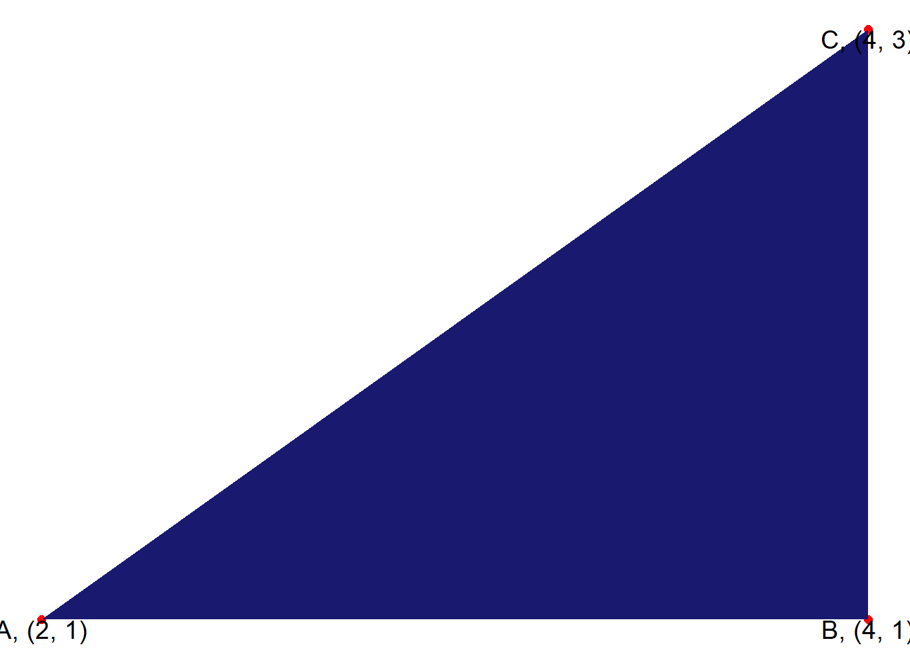
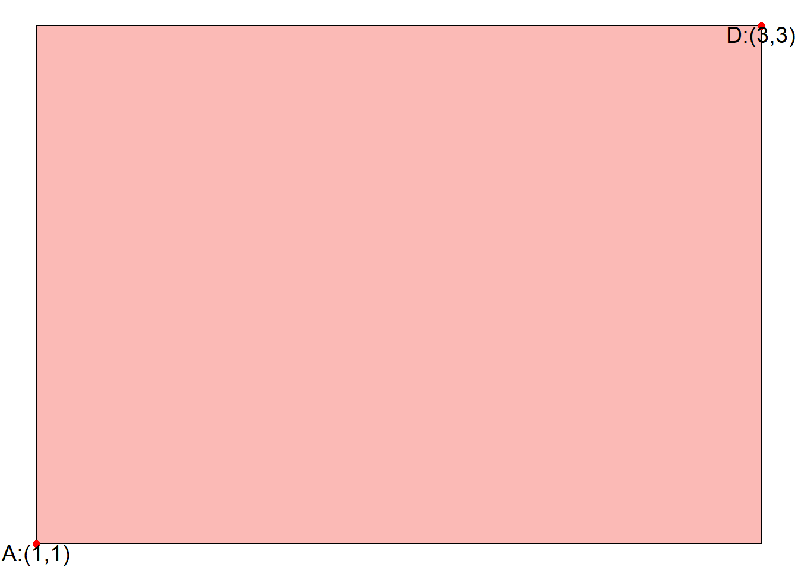
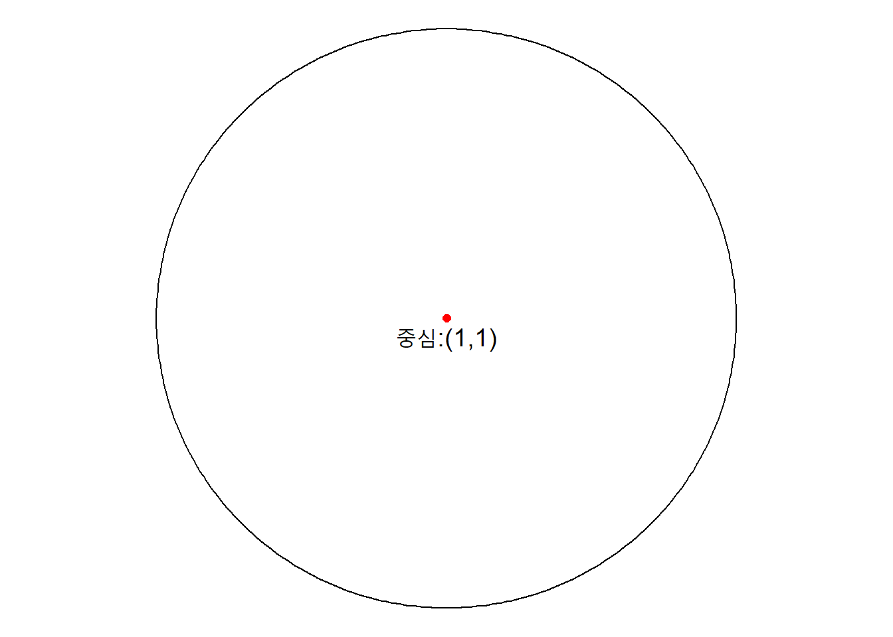
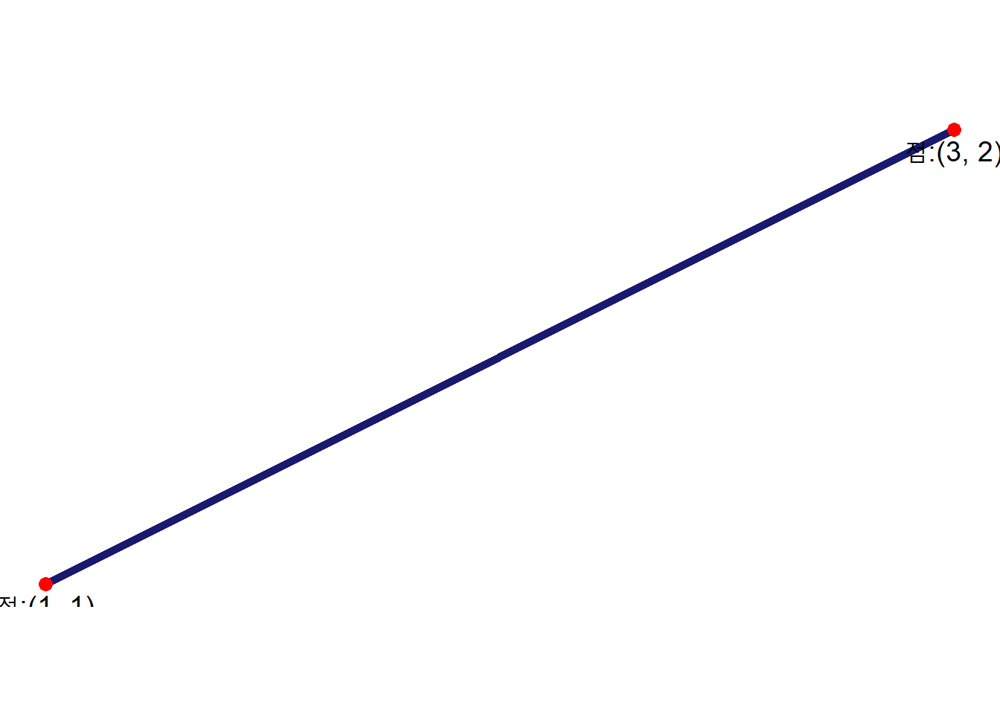
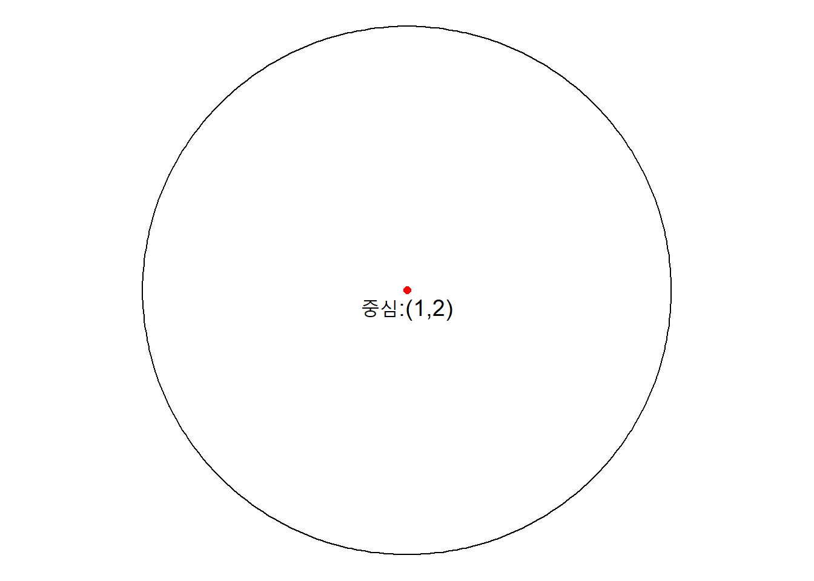

Chapter 3 수학 도형 그리기
3.1 삼각형
수학그래프를 그리는 방법을 살펴보자. 먼저 각 점을 데이터프레임으로 만들고 나서 ggplot으로 시각화한다.
geom_polygon() 함수를 사용해서 각 점을 연결시키고 설명을 넣기 위해 각 꼭지점에 대해 라벨 표식을 위해 point 변수를 넣고
geom_text() 함수로 준비한 라벨을 붙여 삼각형에 대해 이해를 쉽게 돕는다.
library(tidyverse)
triangle_tbl <- tibble(coord_x = c(2,4,4),
coord_y = c(1,1,3),
group = c(1,1,1),
point = c("A", "B", "C")) %>%
mutate(point = glue::glue("{point}, ({coord_x}, {coord_y})"))
triangle_tbl %>%
ggplot(aes(x = coord_x,
y = coord_y,
group = group,
label = point)) +
geom_point(size = 2, color = "red") +
geom_polygon(fill ="midnightblue") +
geom_text(vjust = 1, hjust= 0.5, size = 5) +
theme_void() 
3.2 사각형
사각형은 ggplot에서 먼저 4개의 좌표가 필요하여 이를 데이터프레임으로 제작하고 나서 geom_rect() 함수를 사용해서 시각화한다.
rect_tbl <- tibble(bottom_left = 1,
bottom_right = 3,
top_left = 1,
top_right = 3)
rect_point_tbl <- rect_tbl %>%
select(contains("left")) %>%
rename(x=bottom_left, y=top_left) %>%
bind_rows(
rect_tbl %>%
select(contains("right")) %>%
rename(x=bottom_right, y=top_right)
) %>%
mutate(point = c("A", "D")) %>%
mutate(point = glue::glue("{point}:({x},{y})"))
ggplot() +
geom_rect(data = rect_tbl, aes(xmin=bottom_left, xmax=bottom_right, ymin=top_left, ymax=top_right, fill="red"), color="black", alpha=0.5) +
geom_point(data = rect_point_tbl, mapping=aes(x=x, y=y), size = 2, color = "red") +
geom_polygon(fill ="midnightblue") +
geom_text(data = rect_point_tbl, mapping=aes(x=x, y=y, label = point), vjust = 1, hjust= 0.5, size = 5) +
theme_void() +
theme(legend.position = "none")
3.3 원(circle)
ggforce 팩키지 geom_circle() 함수를 사용하면 직관적으로 \((x, y)\) 위치에 반지름 \(r\)인 원을 그릴 수 있다.
library(ggforce)
circle_tbl <- tibble(x_pos = 1,
y_pos = 1) %>%
mutate(center = glue::glue("중심:({x_pos},{y_pos})"))
circle_tbl %>%
ggplot(aes(x_pos, y_pos)) +
geom_circle(aes(x0 = 1, y0 = 1, r = 1), inherit.aes = FALSE) +
geom_point(size = 2, color = "red") +
geom_text(aes(label = center), vjust = 1.5, hjust= 0.5, size = 5) +
coord_fixed(ratio = 1) +
theme_void() +
theme(legend.position = "none")
3.4 선(line)
geom_segment() 함수를 사용해서 직선을 ggplot으로 그릴 수 있다.
line_tbl <- tibble(x = c(1, 3),
y = c(1, 2)) %>%
mutate(point = glue::glue("점:({x}, {y})"))
line_tbl %>%
ggplot(aes(x, y, label = point)) +
geom_segment(aes(x = line_tbl %>% select(x) %>% slice(1) %>% pull,
y = line_tbl %>% select(y) %>% slice(1) %>% pull,
xend = line_tbl %>% select(x) %>% slice(2) %>% pull,
yend = line_tbl %>% select(y) %>% slice(2) %>% pull),
size = 2,
linetype = 1,
color = "midnightblue") +
geom_point(size = 3, color = "red") +
geom_text(vjust = 1.5, hjust= 0.5, size = 5) +
coord_fixed(ratio = 1) +
theme_void() +
theme(legend.position = "none")
3.5 일반화
함수를 사용해서 점의 위치를 지정하면 도형을 그릴 수 있도록 해보자.
\(x\), \(y\) 원의 중심을 특정하고 반지름 \(r\)을 넣게 되면 이를 바로 원을 그릴 수 있는 함수를 작성하여 시각화한다.
draw_circle <- function(x_pos, y_pos, radius) {
circle_tbl <- tibble(x_pos = x_pos,
y_pos = y_pos) %>%
mutate(center = glue::glue("중심:({x_pos},{y_pos})"),
radius = radius)
circle_tbl %>%
ggplot(aes(x_pos, y_pos)) +
geom_circle(aes(x0 = x_pos, y0 = y_pos, r = radius), inherit.aes = FALSE) +
geom_point(size = 2, color = "red") +
geom_text(aes(label = center), vjust = 1.5, hjust= 0.5, size = 5) +
coord_fixed(ratio = 1) +
theme_void() +
theme(legend.position = "none")
}
draw_circle(1,2,2)
선, 삼각형, 직사각형도 함수로 만들어서 점의 위치를 넣게 되면 도형을 그리게 되는 함수를 작성한다.
데이터 과학자 이광춘 저작
kwangchun.lee.7@gmail.com